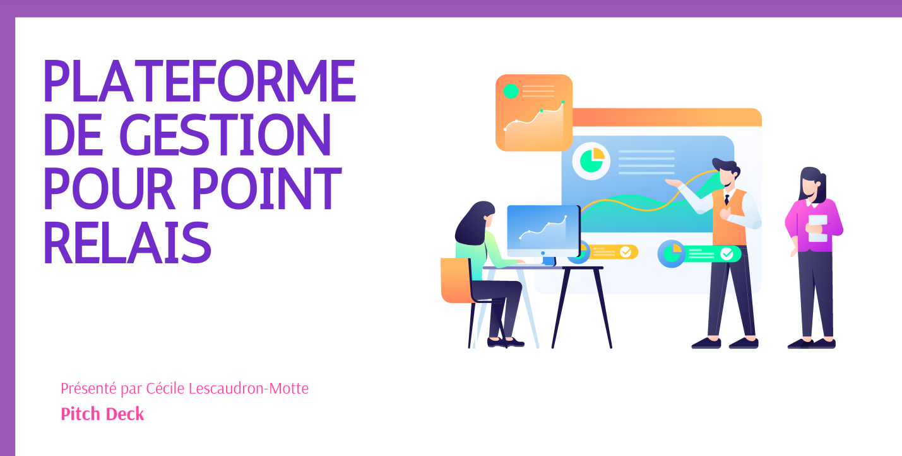

Présenté par Cécile Lescaudron-Motte

Les défis des points relais particuliers :
- Clients sans
prévenir, sans documents
- Trop d’appels et messages pour savoir
si un colis est arrivé
- Gestion du stock et des retraits
compliquée
Un site web complet et intuitif qui facilite la gestion d’un point
relais !
Intégration du suivi des des principeaux transporteurs
UPS, Colissimo, Dhl, ColisColis, Colis privé ...
L’audience du projet, c’est *tout le monde*!
Que vous soyez jeune ou moins jeune, tout le monde reçoit des colis aujourd’hui.
**Avantages** ? Un site web ET une application mobile pour répondre aux besoins de chacun.
Ma grand-mère et ma mère, préfèrent les applis, tandis que d’autres sont plus à l’aise sur un PC.
De plus, le site et l'appli seront conçus pour être accessibles,
afin de faciliter l'utilisation par les personnes en situation de handicap.
Phase de développement, tests utilisateurs, mise en ligne et expansion des fonctionnalités.
Perdre un colis, c’est frustrant pour tout le monde.
Quand cela arrive, la colère s’abat souvent sur la personne qui gère le point relais.
Les clients n’hésitent pas à exprimer leur frustration.
Et c’est encore plus difficile lorsque le colis perdu est un cadeau important :
anniversaire, Saint-Valentin...
des moments spéciaux ratés.
Chaque semaine, plusieurs colis sont renvoyés à cause du délai dépassé.
Un système de gestion efficace pourrait éviter ces pertes
et garantir une meilleure expérience pour tous.